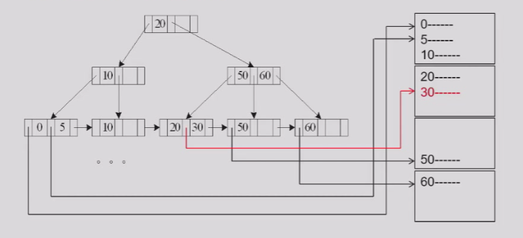
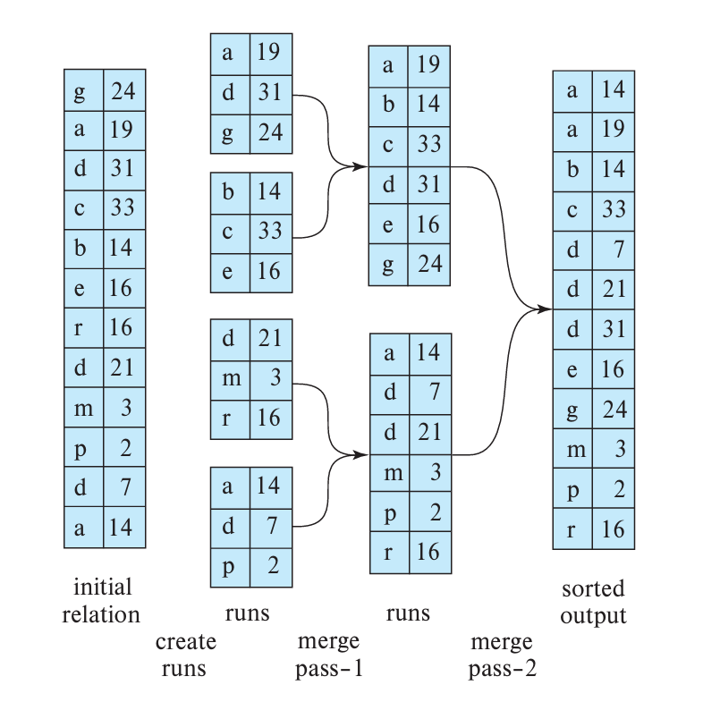

Chapter15 Query Processing

Measures of Query Cost
以磁盘访问时间为主，其又分成：
- seek：一次磁头移动定位的时间记为$t_S$，次数记为$S$
- transfer：一次block数据传输的时间记为$t_T$，次数记为$b$
总耗时：
$$bt_T + St_S$$
Note
一般情况下，一个block的写操作比读操作要慢，但为了简单起见，假设二者transfer时间相同。 同样的，算法分析中忽略了CPU时间。
Selection Operation
File Scan
Algorithm1: linear search
遍历所有记录，检查每条记录是否满足条件。
最差情况下，seek次数$S=1$（假定顺序存储），transfer次数$b=b_r$（$b_r$为表占用的总block数），因此，总开销为：
$$b_r*t_T+t_S$$
Note
如果查询针对的是key属性，说明查询目标唯一，那么一旦查到满足条件的记录即可停止。平均开销为： $$(\frac{b_r}{2})*t_T+t_S$$
linear search的优点是适用范围广。
Index Scan
使用索引进行查询。
Algorithm2: primary(clustering) B+ tree index, equality on key
B+树索引，索引的search key即为查询属性，记录在表中按search key顺序存储，查询结果唯一。

假设B+树索引的高度为$h_i$，那么查询过程要经过$h_i$个索引节点（block），transfer次数为$h_i$，同时还有一次记录数据的transfer，因此transfer次数为$h_i+1$。
由于索引节点和记录数据对应的block并不是顺序排列的，因此seek次数也为$h_i+1$。
总开销为：
$$(h_i+1)*(t_T+t_S)$$
Algorithm3: primary(clustering) B+ tree index, equality on nonkey
B+树索引，索引的search key即为查询属性，记录在表中按search key顺序存储，查询结果不唯一。

与A2相比，transfer次数多了，假设满足条件的记录分布在$b$个block中，那么transfer次数为$h_i+b$。
但是，seek次数不变，还是$h_i+1$，因为记录顺序存储，不管是在物理空间上还是在search key层面上。
总开销为：
$$(h_i+b)t_T+(h_i+1)t_S$$
Algorithm4: secondary(nonclustering) B+ tree index, equality on key
B+树索引，索引的search key是查询属性，记录在表中不按search key顺序存储，查询结果唯一。

实际上其与A2的seek次数和transfer次数都一样，因为实际差别只有记录在表中存储的顺序不同，但因为查询结果唯一，因此只需要锁定一个block，并没有影响。
总开销为：
$$(h_i+1)*(t_T+t_S)$$
Note
Algorithm4': secondary(nonclustering) B+ tree index, equality on nonkey
B+树索引，索引的search key是查询属性，记录在表中不按search key顺序存储，查询结果不唯一。
假设有$n$个记录block中存储着满足条件的记录，而这$n$个block的指针存在$m$个指针block中，B+树索引的叶子节点指向其中一个指针block，不同指针block可能通过链表相连，也就是说，所有的block在物理空间上都没有关联。因此，seek次数和transfer次数都为$h_i+m+n$。
总开销为：
$$(h_i+m+n)*(t_T+t_S)$$
Algorithm5: primary(clustering) B+ tree index, comparison
B+树索引，索引的search key是查询属性，记录在表中按search key顺序存储，范围比较查询。
当查询为$\sigma_{A\geqslant V}(r)$时，与A3类似，总开销为：
$$(h_i+b)t_T+(h_i+1)t_S$$
当查询为$\sigma_{A\leqslant V}(r)$时，与A1类似，总开销为：
$$b*t_T+t_S$$
Algorithm6: secondary(nonclustering) B+ tree index, comparison
B+树索引，索引的search key是查询属性，记录在表中不按search key顺序存储，范围比较查询。

当查询为$\sigma_{A\geqslant V}(r)$时，与A4'类似，总开销为：
$$(h_i+m+n)*(t_T+t_S)$$
当查询为$\sigma_{A\leqslant V}(r)$时，与A1类似，总开销为：
$$b*t_T+t_S$$
此外，还有conjunction: $\sigma_{\theta_1\wedge\theta_2\wedge...\wedge\theta_n}(r)$、disjunction: $\sigma_{\theta_1\vee\theta_2\vee...\vee\theta_n}(r)$、negation: $\sigma_{\neg\theta}(r)$等操作，总体上思想就是线性扫描与索引相结合，随机应变。
Sorting
大多数情况下，内存无法容纳所有待排序的记录，因此需要用到外部排序。 （指路）

起始参数：内存的block数$M$。
步骤一：产生run（归并段）
重复以下过程：
- 将$M$个block大小的记录读入内存；
- 排序；
- 得到第$i$条run，记为$R_i$，写回磁盘。
假设表格总占用的block数为$b_r$，则生成的run数为：
$$N=\lceil\frac{b_r}{M}\rceil$$
transfer次数：$2*b_r$
seek次数：$2*N$
步骤二：归并run
如果$N<M$：
在内存中使用$N$个block作为输入，1个block作为输出，并将每个run的第一个block读入内存。
重复以下过程：
- 在内存的$N$个block中找到最小的记录，写入输出block；
- 如果输出block满了，则写回磁盘；
- 将刚刚的记录从内存中（$N$个block之一）删除，实际上可以用指针的移动表示；
- 如果$N$个block中有一个block的记录已经被删光了（指针移动到末尾），那么从对应的run中读入下一个block。
知道所有的run都被读完为止，也就是说$N$个block全部清空。
transfer次数：$2*b_r$
seek次数：$2*b_r$
如果$N\geqslant M$：
一次只能进行$M-1$个run的归并（内存剩下一个block作为输出），因此需要归并$\lceil\log_{M-1}(\frac{b_r}{M})\rceil$次。这个表达式对于$N<M$的情况也成立。
综上，考虑完整过程。
transfer次数为：
$$b_r+2b_r*\lceil\log_{M-1}(\frac{b_r}{M})\rceil$$
Note
原本应该是步骤一的$2b_r$加上步骤二的$2b_r*\lceil\log_{M-1}(\frac{b_r}{M})\rceil$，但我们假设最后一次归并后最终的排序结果并不需要写回磁盘，而是传递给诸如上层操作等，那么就可以减少一次整体transfer，即$b_r$。
seek次数为：
$$2\lceil\frac{b_r}{M}\rceil+b_r(2\lceil\log_{M-1}(\frac{b_r}{M})\rceil-1)$$
Advanced Version:
如果归并时，每一个run分配到的内存的block不止一个，可以减少transfer次数和seek次数，记分配到的block数为$b_b$。（输出block数也改为$b_b$）
那么，一次归并的run数为$\lfloor\frac{M}{b_b}\rfloor-1$
综上：transfer次数为：
$$b_r+2b_r*\lceil\log_{\lfloor\frac{M}{b_b}\rfloor-1}(\frac{b_r}{M})\rceil$$
对于每一次归并，seek次数减少为$2\lceil\frac{b_r}{b_b}\rceil$
综上：seek次数为：
$$2\lceil\frac{b_r}{M}\rceil+\lceil\frac{b_r}{b_b}\rceil(2\lceil\log_{\lfloor\frac{M}{b_b}\rfloor-1}(\frac{b_r}{M})\rceil-1)$$
Join Operation
Nested-Loop Join

此时，$r$称为outer relation，$s$称为inner relation。
设$r$有$n_r$个记录，$b_r$个block；$s$有$n_s$个记录，$b_s$个block。假设最坏情况下，内存只能给两张表各提供一个block，则
transfer次数为：
$$b_r+n_r*b_s$$
seek次数为：
$$b_r+n_r$$
Block Nested-Loop Join

注意，里面的两层循环只在内存中进行，因此没有transfer和seek开销。同样假设如上的最坏情况。
transfer次数为：
$$b_r+b_r*b_s$$
seek次数为：
$$2*b_r$$
Note
最好情况下，所有记录都能读进内存，此时的transfer次数为$b_r+b_s$，seek次数为$2$。
Note
小的表格作为outer relation，大的表格作为inner relation。
Indexed Nested-Loop Join
针对连接属性上有索引的情况。
对于外关系$r$的每一个记录$t_r$，使用索引去寻找内关系$s$中每一个能连接的记录$t_s$。
在最坏情况下，对于$r$的每一个block，都要seek一次，transfer一次。设根据一个$t_r$通过索引寻找匹配的$t_s$的总时间为$c$，则总开销为：
$$b_r(t_T+t_S)+n_rc$$
Note
当两个表再在连接属性上都有索引时，使用更小的表格作为外关系。
Merge-Join
针对两张表在连接属性上都已经排好序的情况。
这个时候，两张表格都各自有一个移动的指针，每个记录都只会进入内存一次。

transfer次数为：
$$b_r+b_s$$
seek次数为：
$$b_r+b_s$$
Note
优化问题： 假设可用内存的block数不是2个而是$M$个，那么如何根据两张表格的大小来分配这$M$个block呢？ 实际上应该按照两张表格大小开根号后的比值按比例划分，能最小化开销，可以尝试用数学方法推导。
Hash-Join
将大表格的连接细化成小表格的连接。
对于表格$r$，在连接属性上应用哈希函数$h$，将其划分成$n$个bucket；同理，对于表格$s$，在连接属性上也应用相同的$h$，划分出来的bucket数也为$n$。
$h$和$n$的选择是有讲究的，一般要求$s$的每个bucket的内容都可以完整放入内存。因此，$n$至少要满足$n\geqslant\lceil\frac{b_s}{M}\rceil$。此时，$r$称为probe input，$s$称为build input。
接下来，只要对应的bucket进行单层循环的连接即可，因为只有对应的bucket中才会有连接属性相同的记录。
分片阶段：
一个一个block读到内存，对每条记录计算哈希函数值，每一个可能的值都需要内存中有对应的缓冲块，计算好哈希函数值的记录就被放到对应的缓冲块中，缓冲块满了则写回磁盘。
连接阶段：
把$s$的每个bucket读入内存，然后一块一块地将$r$的对应bucket的block读入内存，进行连接。
问题：
如果$b_s$很大，$M$很小，那么需要设计很大的$n$，这也带来了更大的缓冲区需求，因为分片阶段每个bucket都需要一个block作为缓冲区，怎么办？
因此，如果需要一次性完成分片阶段，有不等式$M>\frac{b_s}{M}+1$，$M>\sqrt{b_s}$
解决方法：recursive partioning，即不断地分片，直到每个bucket都能放入内存为止。
代价估算（不考虑recursive partitioning）：
对于transfer：
在分片阶段，$r$和$s$都各自需要被完整读入内存进行分组，然后写回磁盘，因此transfer次数为$2*(b_r+b_s)$。
在连接阶段，同样的，$r$和$s$都各自需要被完整读入内存进行连接（虽然这里是以bucket的顺序读入的），transfer次数为$b_r+b_s$。
但是别忘了，对于每一个bucket，其都可能超出整数个block一点点，对于分片阶段的写回和连接阶段的读入，实际还要考虑那些不够满的block。设哈希函数一共分成$n_h$个bucket，则还有$4*n_h$次额外的transfer（两张表两个阶段）。
综上，transfer次数为：
$$3(b_r+b_s)+4n_h$$
对于seek：
假设输入和输出的单位有$b_b$个block的大小，则分片阶段的seek次数为$2(\lceil\frac{b_r}{b_b}\rceil+\lceil\frac{b_s}{b_b}\rceil)$。而在连接阶段，由于一个bucket是顺序存储的，因此seek次数为$2*n_h$。
综上，seek次数为：
$$2(\lceil\frac{b_r}{b_b}\rceil+\lceil\frac{b_s}{b_b}\rceil)+2*n_h$$
Note
考虑recursive partitioning的情况：待补充。